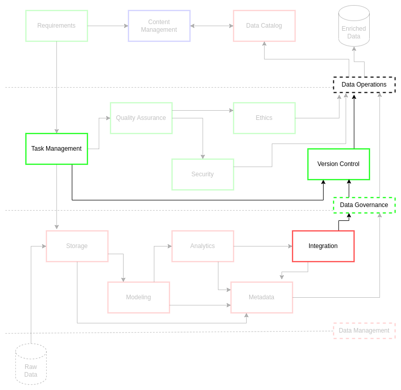

Version Control#
The practices and resultant works associate with data management and data operations[1] are highly technical and dimensionally complex, involving a combination of documentation and source code control. Curation of documents and source code allow the data management team to pursue consistent and rigorous practices for projects. This accumulation of best practices, code, and knowledge artifacts requires a standard to support their storage and reuse to a high level of quality and access. Version and documentation control allows data engineers and data managers to increase efficiency and innovate new techniques for mobilization of data assets.
ciuTshi requires version control (also known as revision or source control[2]) to capture the technical artifacts associated with data management workflows for data assets. A content management (CM) best practices standard exists, but code generation for data products and services still requires a version control standard. These guidelines will outline modular practices for storage, documentation, and improvement of technical assets associated with complex and reusable data processes.
Challenge#
Data engineering and data analysis practices are increasingly hybrid, using a mix of analytic tools and programmed source code solutions to acquire, process, and deliver data products and services. This activity occurs across multiple system and data architectures, all of which must comply with security and policy stipulations while maintaining parity. This requires a well-managed and vigilant approach to version control to support an equally complex data operations environment. The result of such a version control standard would allow more rapid response to business requirements through utilization and mobilization of existing source code assets while creating space to develop new solutions with optimally effective resource and cost impact.
Goals#
Produce adaptable and flexible version control practices that can be applied broadly within data operations practices across multiple systems and data architectures
Utilize best industry practices in development, security, and operations (DevSecOps) for management of technical data assets resulting in reduced timelines to delivery and increased attention to the quality and security of technical solution deployments
Promote the use of consistent and rigorous code storage and documentation resulting in improved collaboration between data management team personnel for shared effort in effective technical solution delivery
Processes#

The following practices are intended to be adapted, augmented, or omitted as needed. This ensures that artifacts associated with data products or services are efficiently cataloged and backed up for later reference and utilization.
Concepts and Roles#
Version control is composed of many elements. Each of these elements is essential in the execution and maintenance of documentation and code that can be reused and shared as part of the collaboration and transition processes for a data product or service. Defining clear concepts and roles simplifies these processes, resulting in an efficient shared experience that ultimate reduces project and organizational costs.
Here are a collection of essential version control concepts:
version control system (VCS) is a particular assemblage of version control software (e.g., Git) and human practices that sustain either centralized or distributed source control
a repository is a collection of changes associated with the source code
a working copy is your copy of the changes where you work on your parts of the source code
a branch is a variant copy of the source code changes in a repository. Most repositories start with a main or master branch, but may have other variant branch categories as dictated by the human practices maintaining the source code
a workflow is a series of actions taken to ensure changes in source code are saved to a branch that do not result in conflicts in changes across the repository. This involves agreement by people maintaining a repository to implement change practices that allow multiple reviews and resolution of conflicting changes. We will cover such a standard and its steps when we talk about GitFlow (see below)
These concepts are monitored and applied by several key actors in the version control processes:
an owner is the person or organization that controls admin accesses to a repository
a member is a person with permissible access to a repository (regulated by the owner)
a reviewer is a person with expert knowledge of the source code and can approve repository changes within and across branches
a contributor is a person who makes changes to the source code and submits those changes via a working copy to the repository
Versioning Scheme#
Any software beyond initial exploratory data analysis (EDA) or prototype scripts needs to implement version scheme to ensure all roles are aware of timelines and states within the source code. This allows for simplified understanding across data projects and roles of the current state and larger productivity patterns in data operations. This makes review and contribution cycles more clear and efficient for a given workflow.
Semantic versioning is a common method and is initially recommended for ciuTshi implementations. It is composed of three elements separated by periods:
major is the first element, denoting major versions like Beta, 1, and so on
Changes here may break the API
Change resets minor and patch numbers
An example would be version 1.2.2 changing to version 2.0.0
minor is the second element, denoting release of new functionality
Changes here should not affect the API
Change resets patch numbers
An example would be version 1.2.2 changing to version 1.3.0
patch is the third element, denoting bug fixes
An example would be version 1.2.2 changing to version 1.2.3
Repository Structure#
In ciuTshi data operations practices, repositories should be built to capture two main categories of knowledge artifacts: documentation and source code. In order to encourage both process improvement and reuse of models, methods, and code, each repository should be structured consistently across all projects. This approach allows for enhanced and repeatable exploration of knowledge artifacts, allowing rapid prototyping that integrates into the lineage of data management practices.
Refer to the version control appendix for template, rubric, and diagram information on the standard repository boilerplate. At a fundamental level, the directory structure for a repository should mirror the steps in the data management and data governance processes within ciuTshi data operations. As a result, data management personnel should know where to look within and between projects for technical solutions. This structuring also makes archival analysis and knowledge discovery of solutions moving forward as the data teams seeks leading edge innovations.
Code to GitHub#
VERY IMPORTANT: check for any sensitive material before committing your code!!!
GitFlow#
In order to maintain productivity through efficient communication on data projects, data professionals leverage consistent, continuous workflow methods. There are several of these methods developers and technical professionals use for software development and other technical tasks. Regardless of the method or model, their application should produce sufficiently rigorous documentation and structured source code that is easily consumable and understandable by team members. These documentation and code artifacts ultimately drive consistent deployment of usable software to a sustainable level of quality and security for the customer.
GitFlow[3] (demonstrated in the image below) is a Git-centric development operation workflow standard. Git[4] is a distributed version control system built to manage and resolve numerous source code contributions. GitFlow is implemented around Git operations to ensure their sequential execution results in optimized development actions across the development team.

A standard Git[4] workflow from contributor to review may look like this:
Fork the repository to obtain a local working copy of the source code and documentation
Identify and checkout (or create) the appropriate branch for you to develop as outlined by task management instructions
Commit completed work to the appropriate branch with sufficient comments
Create a pull request to have a reviewer examine your code for inclusion or further edits
Deploy the code following quality assurance and security checks have passed prior to merging with the production branch
Merge approved code to the appropriate repository production branch with (multiple) reviewer approval
GitFlow[3] enhances this process through orchestrating proper branch management to minimize conflicts in commits between contributors to the source code, bridging efficient task management, quality assurance, and security practices.
Note
Each branch type should be part of the branch naming conventions. For example, a new feature branch should following a feature-my_new_feature naming convention.
Main branches help safeguard production deploy through implementation of layered deployment testing of the source code
Main or Master branch is where the stable production version of the source code resides
Develop or Dev branch is where the next release is staged and reviewed for continuous integration (CI)
Supporting branches enable rapid and adaptable implementation of new features and fixes to the source code
Feature branches are where new features are added for the next major or minor version
Features are pushed to the develop branch
Hotfix branches are for emergency security patches
Hotfixes are pushed to the production branch (e.g., main) with great scrutiny
Release branches are implemented to aid rapid staging of the next production version
Release is staged from the develop branch
For additional information, refer to the [3][4] on Git and GitFlow.
Task Management Boards to GitHub#
As part of the data management and data governance practices for ciuTshi data operations, it is important to use version control to store documentation and source code and to ensure the connections between data tasks, their execution, and their deliverable quality is maintained for future analysis. Many task management tools allow you to export task and board configuration associated with a particular data project. These exports should be stored in the repository’s task management folder.
Model Migration#
This version control document is intended to provide general guidance on how to store documentation and source code associated with projects. These projects are often derived from customer requirements and coordinated through task management systems. As a result, the repositories will often be created and structured to facilitate project execution.
However, data personnel should always develop and store solutions with the intent to make those solutions transferrable across multiple projects, documented and structured for future use by themselves and other team member.
Data operations team member should persistently check to see if a particular solution should be moved to its own repository for more broad utilization. The manner in which this will be done is largely up to data management leadership and heavily depends on the type and persistence of the model solutions. Regardless, this migration task should be considered an essential data operations objective as an additional line of data product and service to organizations and their stakeholders.